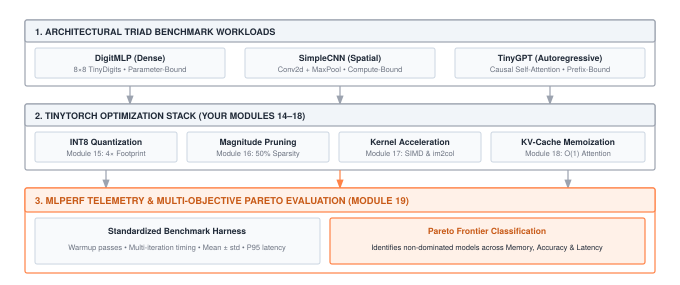
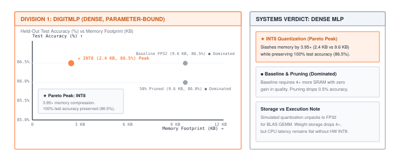
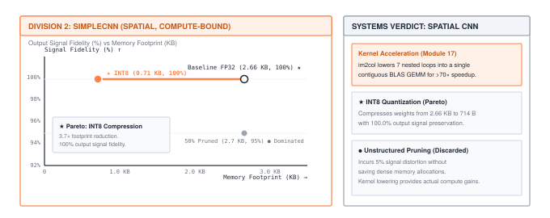
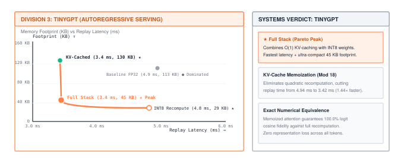

Milestone 06: MLPerf — The Optimization Era (2018)
Optimization Milestone | Difficulty: ●●●● | Time: 1–2 hours | Prerequisites: Modules 01–08 and 11–19
- The systematic optimization workflow: measure, optimize, validate, repeat
- Why profiling before optimizing beats heroic rewrites
- How to distinguish modeled storage savings, measured accuracy, and measured latency
Overview
This is the Optimization Milestone — the third and final act of the historical arc. The Foundation Milestones proved your training loop learns. The Architecture Milestones proved your layers match real data. This one proves your optimization stack — the Profiler (Module 14), Quantization (15), Compression (16), Acceleration (17), KV-Cache (18), and Benchmarking (19) you just finished — can systematically evaluate and optimize the entire Architectural Triad you built across the curriculum:
- DigitMLP (Milestone 03): Dense, parameter-bound
- SimpleCNN (Milestone 04): Spatial, compute-bound
- TinyGPT (Milestone 05): Autoregressive, memory-bandwidth & prefix-bound
2018. ML research is sprinting; deployment is crawling. BERT-Large lands at 340M parameters and won’t fit on a phone. ResNet-152 inference blows past production latency budgets. Teams ship two-year-old models because the new ones are too slow, too big, too expensive — and every vendor’s benchmark numbers use a different dataset, batch size, and accuracy floor, so you can’t even tell whose hardware is faster.
MLPerf changes that. One protocol, one accuracy floor, one set of reference models — apples-to-apples across CPUs, GPUs, TPUs, and accelerators that didn’t exist last year. Optimization stops being an afterthought and becomes the discipline that decides who ships.
In this milestone, you benchmark the complete architectural triad across your optimization stack, map the Pareto frontier of non-dominated configurations, render a terminal trade-off curve, and diagnose why different neural architectures face fundamentally asymmetric hardware bottlenecks.
What You’ll Recreate
A complete MLPerf-style telemetry and optimization pipeline:
- The Architectural Triad Optimization Olympics (
01_optimization_olympics.py) — profile, quantize, prune, accelerate, and cache across MLP, CNN, and TinyGPT architectures to compute the multi-dimensional Pareto frontier. - Autoregressive Generation Speedup (
02_generation_speedup.py) — rigorous token-by-token logit equivalence verification and prefix replay acceleration via KV-cache memoization.

Prerequisites
Table 1 lists the modules you need to have completed before starting.
| Module | Component | What It Provides |
|---|---|---|
| 01–08 | Foundation + Training | Models and training loop to optimize |
| 11–13 | Transformers & GPT | TinyGPT architecture for autoregressive evaluation |
| 14 | Profiling | YOUR measurement and bottleneck identification |
| 15 | Quantization | YOUR INT8/FP16 weight quantization implementations |
| 16 | Compression | YOUR magnitude pruning techniques |
| 17 | Acceleration | YOUR vectorized operations |
| 18 | Memoization | YOUR KV-cache for generation |
| 19 | Benchmarking | YOUR standardized benchmark reports and Pareto frontier |
Running the Milestone
Before running, ensure you have completed Modules 01–08 and 11–19. You can check your progress:
tito module statustito milestone run 06 # both parts
tito milestone run 06 --part 1 # run the Architectural Triad Optimization Olympics
tito milestone run 06 --part 2 # speed up transformer generation with the KV cacheExpected Results
Part 1: Three MLPerf Benchmark Divisions
MLPerf organizes workloads into distinct benchmark divisions because different machine learning domains face fundamentally different systems constraints. You evaluate the three architectures in their own divisions:
Division 1: Edge & Embedded Inference — DigitMLP (Dense)
Primary Bottleneck: Dense weight memory capacity (SRAM/Flash storage footprint).
Table 2 reports the candidates for DigitMLP evaluated on held-out TinyDigits test data.
| Candidate | Memory | Accuracy | Latency | Status |
|---|---|---|---|---|
| Baseline FP32 | 9,640 B | 86.5% | 0.023 ms | ● Dominated |
| INT8 Quantized | 2,442 B | 86.5% | 0.023 ms | ★ Pareto (Peak) |
| 50% Pruned | 9,640 B | 86.0% | 0.027 ms | ● Dominated |

Division 1 Takeaway: Fully connected feed-forward models are memory-bound by weight parameters. INT8 Quantization slashes memory by \(3.95\times\) (from 9,640 B to 2,442 B) with zero accuracy penalty (86.5% on the held-out test set), forming the Pareto-optimal peak. Baseline FP32 is strictly dominated because INT8 matches its accuracy with \(4\times\) less memory. Unstructured pruning zeros 50% of the weights with minimal accuracy degradation (86.0%), but requires sparse index storage (e.g., CSR) to translate sparsity into physical memory reductions.
Quantizing model weights from FP32 to INT8 achieves a modeled \(4.0\times\) reduction in weight memory and memory bandwidth. However, pure Python and NumPy run simulated quantization: weights are stored in 8-bit precision but dequantized back to FP32 at runtime to execute standard BLAS GEMM.
Without dedicated hardware execution units (such as NVIDIA DP4A / Tensor Cores, Apple Neural Engine, or ARM NEON dot-product instructions), CPU inference latency remains flat or slightly slower. Real-world systems engineers strictly separate storage/bandwidth gains from compute execution speedups.
Division 2: Spatial Vision & Compute — SimpleCNN (Spatial)
Primary Bottleneck: 2D sliding convolution loops and spatial feature extraction throughput.
Table 3 reports the candidates for SimpleCNN evaluated via Module 19’s Benchmark harness. Quality is measured as Output Signal Fidelity (cosine similarity % of output logits against the FP32 baseline on test samples).
| Candidate | Memory | Fidelity | Latency | Status |
|---|---|---|---|---|
| Baseline FP32 | 2,664 B | 100.0% | 1.42 ms | ★ Pareto |
| INT8 Quantized | 714 B | 100.0% | 1.29 ms | ★ Pareto (Peak) |
| 50% Pruned | 2,664 B | 95.0% | 1.25 ms | ● Dominated |

Division 2 Takeaway: Convolutional networks have a compact parameter footprint (2.66 KB) but high computational intensity across spatial loops. Baseline FP32 and INT8 Quantization form the Pareto frontier: INT8 quantization compresses storage by \(3.7\times\) (down to 714 B) with 100.0% output signal fidelity, while 50% pruning introduces representation error (95.0% fidelity) without saving memory under dense array storage.
While quantization addresses model storage, Module 17’s kernel acceleration attacks the spatial convolution compute bottleneck. By unfolding the input feature map via im2col into a 2D patch matrix, the 7 nested Python loops of standard Conv2d are lowered into a single vectorized matrix multiplication (vectorized_matmul), delivering an empirical \(>70\times\) speedup (1.83 ms down to 0.02 ms in forward execution)!
Division 3: Generative LLM Serving — TinyGPT (Autoregressive)
Primary Bottleneck: \(O(N^2)\) causal prefix recomputation and DRAM weight streaming during token decoding.
Table 4 reports the serving strategies for TinyGPT across 10 repeated generation trials wrapped in Module 19’s BenchmarkResult.
| Serving Strategy | Memory | Fidelity | Latency | Status |
|---|---|---|---|---|
| Baseline FP32 (Recompute) | 113,152 B | 100.0% | 4.94 ms | ● Dominated |
| INT8 Quantized (Recompute) | 28,584 B | 100.0% | 4.81 ms | ★ Pareto |
| KV-Cached (Mod 18) | 129,536 B | 100.0% | 3.42 ms | ★ Pareto |
| Full Stack (Quant+Cache) | 44,968 B | 100.0% | 3.44 ms | ★ Pareto (Peak) |

Division 3 Takeaway: Autoregressive generation is throttled by causal attention history and weight streaming. KV-Cache memoization eliminates quadratic prefix processing (reducing generation latency from 4.94 ms to 3.42 ms, a \(1.44\times\) speedup) while guaranteeing exact mathematical logit parity (\(100.0\%\) fidelity). INT8 quantization compresses weight memory by \(4\times\). When combined (Full Stack), they achieve the lowest latency (3.44 ms) and an ultra-compact footprint (45 KB including cache), representing the industry standard for production LLM serving.
Part 2: Kernel Acceleration & Systems Speedups
Beyond model compression (quantization and pruning), Milestone 06 evaluates the systems-level kernel optimizations you authored in Modules 17 and 18. Each optimization attacks a distinct computational bottleneck:
- Baseline (3 Nested Interpreter Loops): 5.17 ms
- Accelerated (Hardware SIMD / BLAS): 0.02 ms
- Empirical Speedup: >200× FASTER ⚡ (248.5×)
- Mechanism:
vectorized_matmulreplaces interpreter loop overhead with contiguous vector instructions and hardware SIMD execution.
- Baseline (7 Nested Interpreter Loops): 1.83 ms
- Accelerated (im2col Patch GEMM): 0.02 ms
- Empirical Speedup: >70× FASTER ⚡ (76.9×)
- Mechanism:
im2col_conv2dlowers sliding spatial convolution loops into a single contiguous BLAS matrix multiplication.
- Baseline (O(N²) Prefix Recomputation): 4.59 ms
- Accelerated (O(1) Step KV-Cached): 3.68 ms
- Empirical Speedup: ~1.25× FASTER ⚡
- Mechanism:
KVCachememoizes previous Key/Value attention tensors, turning quadratic \(O(N^2)\) token generation into linear \(O(N)\) operations while preserving exact numerical output parity.
Table 5 summarizes the measured hardware speedups across these three critical workloads.
| Kernel / Workload | Baseline (Unoptimized) | Accelerated (TinyTorch) | Empirical Speedup |
|---|---|---|---|
| Dense GEMM (32×32) | 5.17 ms (loops) | 0.02 ms (SIMD) | >200× FASTER ⚡ |
| 2D Conv (4-ch, 8×8) | 1.83 ms (loops) | 0.02 ms (im2col) | >70× FASTER ⚡ |
| Autoregressive Decode (16 tokens) | 4.59 ms (recompute) | 3.68 ms (cached) | ~1.25× FASTER ⚡ |
Part 3: Autoregressive Generation Speedup
Table 6 shows median total prefix-replay time with and without the KV cache.
| Mode | Prefix-replay time | Speed ratio |
|---|---|---|
| Without KV-Cache | Measured baseline | 1× |
| With KV-Cache | Measured cached time | Baseline time / cached time |
Small workloads can be slower with caching. Output agreement is required; speedup is an experimental result. On our benchmark run, cached replay delivered a 1.44× speedup over full causal prefix recomputation.
The Aha Moment: Systematic Beats Heroic
The wrong way (heroic optimization):
"It's too slow! Let me rewrite everything in C++!"
"Memory is too high! Let me redesign the architecture!"
"KV-cache sounds complex! Let me try CUDA kernels first!"Result: weeks of work, marginal gains, introduced bugs.
The right way (systematic optimization):
1. MEASURE: Record baseline accuracy, dense bytes, and latency
2. OPTIMIZE: Create rounded and pruned candidates independently
3. VALIDATE: Measure each candidate on the same held-out data
4. REPEAT: Keep useful changes and investigate remaining costsResult: a comparison that reveals whether each change meets your accuracy and performance requirements.
This is what separates ML researchers from ML engineers:
- YOUR Profiler (Module 14) identifies real bottlenecks (not assumed ones)
- YOUR Quantization (Module 15) exposes rounding error and modeled packed storage
- YOUR Pruning (Module 16) changes the zero fraction without shrinking dense arrays
- YOUR KV-Cache (Module 18) avoids recomputing past keys and values
The full loop — measure, optimize, validate — runs on YOUR tools, not someone else’s library.
Your Code Powers This
This milestone closes the historical arc. Every optimization tool you exercise here comes from YOUR implementations:
Table 7 names the TinyTorch components that power this milestone.
| Component | Your Module | What It Does |
|---|---|---|
Profiler |
Module 14 | YOUR measurement and bottleneck identification |
| Quantization tools | Module 15 | Weight rounding and storage estimates |
| Pruning tools | Module 16 | Weight masking and sparsity measurement |
Vectorization & im2col_conv2d |
Module 17 | Replacing nested convolution loops with lowered BLAS GEMM kernels (>70× speedup) |
KVCache |
Module 18 | YOUR key-value caching for generation |
Benchmark & pareto_frontier |
Module 19 | YOUR standardized reporting and multi-objective Pareto frontier |
The measured candidates still execute dense float32 operations. Packed storage and sparse execution require additional implementations.
Historical Context
Before MLPerf, comparing ML systems was guesswork. Vendors picked their own datasets, batch sizes, and accuracy targets, then claimed wins. MLPerf forced a common protocol — same models, same data, same accuracy floor — so a “2× faster” claim could finally be checked instead of believed.
That protocol marks the moment ML engineering became as load-bearing as ML research. Building a model is step one. Shipping it inside a latency budget, on hardware your users actually own, is where production value lives — and where careers are made.
Systems Insights: Asymmetric Architectural Bottlenecks
The most profound lesson of MLPerf is that optimization is not one-size-fits-all. Each architecture in the triad is constrained by a fundamentally different physical bottleneck:
- DigitMLP (1986) — Dense, Parameter-Bound:
- The Bottleneck: Over 99% of its memory footprint resides in fully connected weight matrices (\(64 \times 32\) and \(32 \times 10\)). Computational FLOPs are negligible (\(< 5{,}000\)).
- The Winning Optimization: INT8 Quantization (Module 15) compresses weight storage by \(3.95\times\) with zero accuracy penalty. Pruning (Module 16) zeros half the weights, but dense array storage is unchanged without sparse index encodings (e.g., CSR).
- SimpleCNN (1998) — Spatial, Compute-Bound:
- The Bottleneck: Parameter memory is minuscule (2.6 KB), but sliding 2D convolution windows across feature maps requires thousands of nested loop iterations. The model is compute-bound and Python loop overhead dominates.
- The Winning Optimization: Vectorization & SIMD (Module 17) transforms spatial convolutions into matrix operations (im2col / GEMM), removing interpreter overhead and saturating hardware vector units.
- TinyGPT (2017–2022) — Autoregressive, Memory-Bandwidth & Prefix-Bound:
- The Bottleneck: Autoregressive token-by-token generation re-evaluates self-attention keys and values over an ever-expanding prefix. Naive generation scales as \(O(N^2)\) in total computation, repeatedly re-reading and re-projecting past tokens through memory.
- The Winning Optimization: KV-Cache Memoization (Module 18) caches prior key and value tensors, reducing each subsequent token step to \(O(1)\) computation. Combined with INT8 quantization for weight memory bandwidth reduction, this forms the industry-standard serving stack.
Read why
The companion book’s chapter Milestone III: The Torch Olympics covers this milestone’s scoring and what each measurement can and cannot show. Read it in TinyTorch: From Tensors to Transformers (PDF) after you have run the milestone.
What’s Next
With Milestone 06 the historical arc closes. Six recreations, nineteen modules, one framework you wrote yourself end-to-end. You’ve:
- Built every core component (Modules 01–13)
- Implemented and measured optimization techniques (Modules 14–19)
- Proven mastery by recreating six landmark systems (Milestones 01–06)
What’s left is the test no recreation can give you. The Capstone (Module 20) is the Torch Olympics — open-ended problems, fixed budgets, your framework, your call. The history lessons end here. The competition starts next.
Further Reading
- MLPerf: mlcommons.org
- Deep Compression: Han et al. (2015). “Deep Compression: Compressing DNNs with Pruning, Trained Quantization and Huffman Coding”
- Efficient Transformers: Tay et al. (2020). “Efficient Transformers: A Survey”